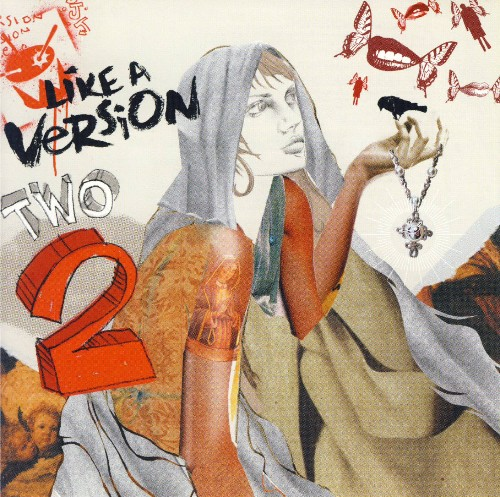

like a version volume 2

title: like a version volume 2
format: CD
- gyroscope - monument
- the herd - i was only 19
- eels - i could never take the place of your man
- sophie koh - creep
- spoon - upwards at 45 degrees
- sarah blasko - goodbye yellow brick road
- the drones - words from a woman to her man
- lior - needle and the damage done
- holidays on ice - the holiday song
- crooked fingers - long black veil
- tegan and sara - dancing in the dark
- evermore - relapse
- holly throsby - mistress
- 67 special - scar
- live@subs - rolled up
- mia dyson - can't let go
- the panda band - my mistake
- the Mountain Goats: wild world by the birthday party
- kate miller-heidke - little water song
- the tea party - the maker
- new buffalo - don't let me be misunderstood
- willy mason - the way i am
please mail any questions/comments/complaints, or just notes hello to:nall@themountaingoats.net